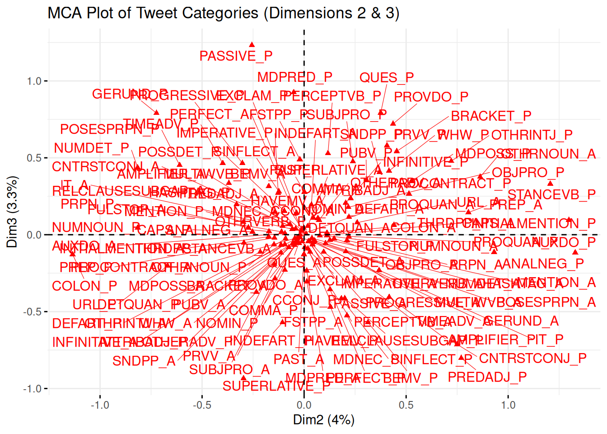
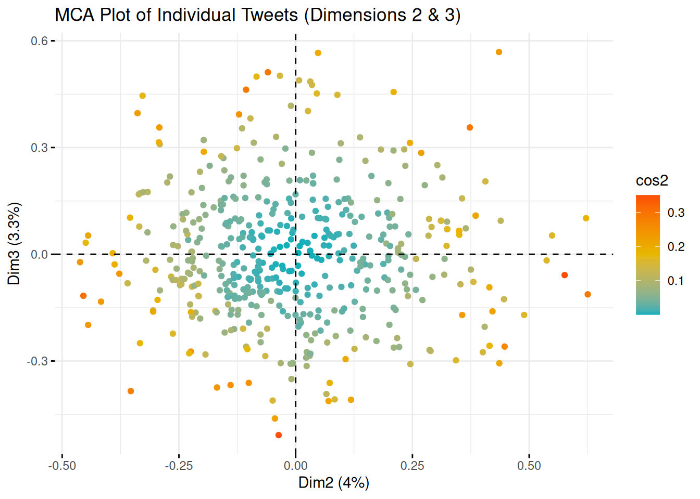
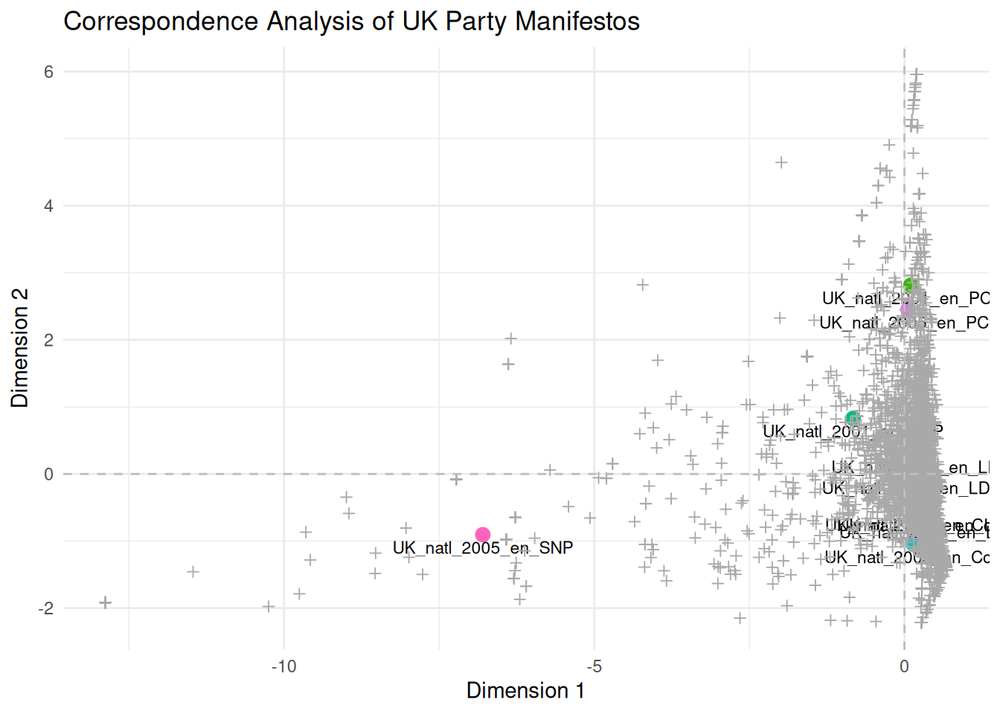

6.3 Correspondence Analysis
Correspondence analysis (CA) is a dimensionality reduction technique used to analyse the relationship between categorical variables. In text analysis, it is often applied to document feature matrices (DFM) to explore the associations between documents and words. CA can be considered categorical data (or count data treated as frequencies or proportions) equivalent to Principal Component Analysis (PCA). It simultaneously positions documents and features (words) in a low-dimensional space, where proximity between points indicates association.
- Simple Correspondence Analysis (SCA) is applied to a two-way contingency table (like a dfm).
- Multiple Correspondence Analysis (MCA) is an extension used to analyse relationships between more than two categorical variables and is often applied to surveys or questionnaires. While a DFM is inherently a two-way table, MCA can be used by treating the presence or absence of each word in a document as a categorical variable. However, this approach is less common than applying SCA directly to the dfm or using specialised text analysis functions that perform a form of CA.
Here, we look at an example using a dataset where the text has been coded into specific categories, making it suitable for MCA. The example uses data from an article on the stylistic variation in Donald Trump’s Twitter data (which we already looked at earlier) between 2009 and 2018 (Clarke & Grieve, 2019). In this study, the authors downloaded 21,739 tweets and grouped them into 63 categories over 5 dimensions based on their content. First, we load the packages we need for the Correspondence Analysis:
Although there is a CA function in quanteda, here, we first look at FactoMineR and factoextra, which allow us several interesting possibilities. FactoMineR is renowned for its extensive range of exploratory data analysis functions, including CA and MCA, and it integrates seamlessly with factoextra for visualisation. First, we load the necessary packages and the dataset:
Then, we import the data, which should contain categorised information about the tweets. As before, you can load the data directly from the URL:
urlfile = "https://raw.githubusercontent.com/SCJBruinsma/qta-files/master/TRUMP_DATA.csv"
tweets <- read_csv(url(urlfile), show_col_types = FALSE)
head(tweets)This dataset contains several variables, including categorisations of the tweets and possibly other metadata. For the MCA, we must select the columns representing the categorical variables we want to analyse (the 63 categories mentioned in the original text). We will also sample a subset of the tweets for faster processing.
tweets <- tweets[sample(nrow(tweets), 500), ]
tweets_mat <- tweets[, 2:65] # Select columns 2 through 65, which contain the categorical variables for MCA.We can then run the Multiple Correspondence Analysis using the MCA() function from the FactoMineR package. When we provide the data frame containing the categorical variables, we need to specify the number of dimensions (ncp) to retain. We can determine this by examining the eigenvalues (similar to a scree plot in PCA) or base ourselves on theoretical considerations. Here, we use 5, as this was the number of dimensions found by Clarke & Grieve (2019). In addition, we can include supplementary quantitative variables (quanti.sup) or supplementary individuals (ind.sup) that do not contribute to the MCA but are projected onto the resulting dimensions. Here, we include ‘Tweet.Length’ as a supplementary quantitative variable:
mca_tweets <- MCA(tweets_mat, ncp = 5, quanti.sup = 1, graph = FALSE) # 'ncp=5' specifies keeping 5 dimensions. 'quanti.sup=1' indicates that the first column (Tweet.Length) is a supplementary quantitative variable. 'graph=FALSE' prevents the default plots from being generated immediately.First, let’s look at the association of the supplementary quantitative variable (Tweet Length) with the five dimensions. The MCA output’s quanti.sup element shows the correlation between the supplementary variable and each dimension.
mca_tweets$quanti.sup # Display the correlations between the supplementary quantitative variable and the MCA dimensions.## $coord
## Dim 1 Dim 2 Dim 3 Dim 4 Dim 5
## WORDCOUNT 0.8570116 -0.1467442 -0.05012065 0.01714113 -0.1163162As we can see, the ‘Tweet.Length’ variable strongly correlates with dimension 1. This means that the first dimension primarily captures the variation in the length of tweets rather than different stylistic categories. When interpreting the correspondence between categories and dimensions, it’s often advisable to focus on the dimensions that explain the variance in the categorical variables independently of the ancillary variables, such as length. We will, therefore, concentrate our visualisation on dimensions 2 and 3, as we did in the original analysis.
We can visualise the position of the categories on the chosen dimensions using fviz_mca_var() from the factoextra package. This plot shows the categories in MCA space. Closely related categories are often related, and their position relative to the dimensions indicates their contribution to those dimensions.
fviz_mca_var(mca_tweets,
repel = TRUE, # Avoid overlapping text labels
geom = c("point", "text"), # Display both points and text labels
axes = c(2, 3), # Specify that we want to plot Dimensions 2 and 3
ggtheme = theme_minimal(),
title = "MCA Plot of Tweet Categories (Dimensions 2 & 3)")
This plot illustrates the relationships between the tweet categories based on Dimensions 2 and 3. Clarke & Grieve (2019) interpreted Dimension 2 as a ‘Conversational Style’ and Dimension 3 as a ‘Campaigning Style’. Thus, categories at the extremes of Dimension 2 indicate conversational style, while those at the extremes of Dimension 3 are associated with campaigning style. Categories near the centre are less distinctive along these dimensions.
To see which categories contribute most to these dimensions or have the most extreme positions, we can examine their coordinates on the dimensions. The get_mca_var() function extracts detailed information about the variables (categories), including their coordinates, contributions to the dimensions, and correlations.
var_info <- get_mca_var(mca_tweets) # Get detailed information about the categories (variables) from the MCA output.
coordinates <- as.data.frame(var_info$coord) # Extract the coordinates of the categories on each dimension.
head(coordinates)## Dim 1 Dim 2 Dim 3 Dim 4 Dim 5
## AMPLIFIER_A -0.09788751 -0.06902274 0.06712121 0.09543741 -0.03446247
## AMPLIFIER_P 0.59146114 0.41705287 -0.40556335 -0.57665701 0.20823099
## ANALNEG_A -0.15748770 -0.17213448 0.02091087 -0.09791397 -0.04902178
## ANALNEG_P 0.85204886 0.93129168 -0.11313318 0.52973968 0.26522042
## ATTRIBADJ_A -0.47929022 0.22824686 0.23663061 0.13986682 0.40121761
## ATTRIBADJ_P 0.23821011 -0.11344006 -0.11760683 -0.06951464 -0.19940755# Optionally, order by a specific dimension to see the extremes. This can help
# interpret the dimensions by identifying the categories most strongly
# associated with each end.
coordinates_ordered_dim2 <- coordinates %>%
arrange(`Dim 2`)
head(coordinates_ordered_dim2) # Display categories with the most negative coordinates on Dim 2## Dim 1 Dim 2 Dim 3 Dim 4 Dim 5
## COLON_P -0.2592962 -1.1346550 -0.12765743 0.65087583 0.6419737
## NUMDET_P 0.3617208 -0.8159953 0.43697966 -0.03973954 0.1617759
## NUMNOUN_P 0.2506834 -0.8150235 0.04534697 -0.38332211 0.3973838
## GERUND_P 0.2383111 -0.7235272 0.79047745 -0.04533401 -0.3780261
## URL_P -0.5334139 -0.6689921 -0.20223454 0.29823581 0.6217575
## POSESPRPN_P 0.1372452 -0.6100926 0.45200582 0.16700550 0.6420377## Dim 1 Dim 2 Dim 3 Dim 4 Dim 5
## PREP_A -0.8230712 0.8052457 0.14477086 -0.03477667 0.03766616
## OTHRNOUN_A -1.4568686 0.8629022 0.37599003 -0.41308773 0.09841326
## ANALNEG_P 0.8520489 0.9312917 -0.11313318 0.52973968 0.26522042
## STANCEVB_P 0.5514010 1.2065100 0.33043865 0.49040727 0.77609391
## INITIALMENTION_P -1.3740889 1.2977164 0.09504675 -0.65336128 -0.36025425
## AUXDO_P 0.7401893 1.3289167 -0.11606038 1.11590177 0.30943522## Dim 1 Dim 2 Dim 3 Dim 4 Dim 5
## SUPERLATIVE_P 0.3844324 -0.2969177 -0.9344720 0.37897964 -1.12086446
## PREDADJ_P 0.5907107 0.7702513 -0.8023569 -0.66156655 0.32914762
## CNTRSTCONJ_P 0.4785936 0.7500073 -0.7131886 -0.58944621 0.45511677
## INDEFART_P 0.4894847 -0.1060032 -0.5706842 -0.05053374 0.20323712
## BEMV_P 0.5529525 0.3132293 -0.5702540 -0.34951629 0.06513688
## MDNEC_P 0.5222506 0.2103261 -0.5253531 0.61481327 0.08689422## Dim 1 Dim 2 Dim 3 Dim 4 Dim 5
## PRVV_P 0.6250762 0.40612075 0.5799258 0.79378561 -0.07698886
## PROVDO_P 1.0370597 0.43591147 0.7204183 -0.03205591 -0.66174907
## GERUND_P 0.2383111 -0.72352720 0.7904774 -0.04533401 -0.37802611
## QUES_P 0.3404573 0.37539603 0.7922378 1.57205964 0.26088244
## MDPRED_P 0.4722946 -0.05099973 0.9256090 -0.68949403 -0.08883854
## PASSIVE_P 0.6729391 -0.25613607 1.2319758 -1.15578164 -0.16784366Examining the categories with the highest absolute coordinates on Dimensions 2 and 3 provides insight into the characteristics of these stylistic dimensions. For instance, if categories such as ‘Use of colloquialisms’ or ‘Personal anecdotes’ have high positive coordinates on Dimension 2, this lends weight to interpreting this dimension as ‘Conversational Style’. Similarly, if categories such as ‘Policy mentions’ or ‘Calls to action’ have high positive coordinates on Dimension 3, this would support the interpretation of this dimension as ‘Campaigning Style’. MCA also enables individuals (or, in this case, tweets) to be plotted in the same space using the fviz_mca_ind() function, which can reveal clusters of tweets with similar stylistic features:
# Plot the position of individual tweets on Dimensions 2 and 3.
fviz_mca_ind(mca_tweets,
geom = "point", # Show points for each tweet
axes = c(2, 3), # Plot Dimensions 2 and 3
col.ind = "cos2", gradient.cols = c("#00AFBB", "#E7B800", "#FC4E07"), # Color individuals by their quality of representation (cos2) on the dimensions, using a colour gradient
repel = FALSE,
ggtheme = theme_minimal(),
title = "MCA Plot of Individual Tweets (Dimensions 2 & 3)")
Interpreting MCA results is often an iterative and exploratory process that involves examining the position of categories and individuals and potentially using additional variables or external information to understand the meaning of the dimensions. The designers of FactoMineR have developed a Shiny app called Factoshiny that provides an interactive interface for exploring MCA results that can be very helpful in this process.
library(Factoshiny)
# Launch the interactive Shiny app for MCA results. This provides a graphical
# user interface to explore the MCA output interactively
res.shiny <- MCAshiny(mca_tweets) # Use the MCA output object as input.Ensure you quit the Shiny application by clicking the “Quit the App” button to return to your R session. For more information on Correspondence Analysis and the FactoMineR package, see the original article by Lê et al. (2008) or the package website.
While FactoMineR is excellent for MCA with pre-coded categorical data, the quanteda.textmodels package also provides a function, textmodel_ca(), designed explicitly for Simple Correspondence Analysis (SCA) on a document-feature matrix (dfm). This is particularly useful when you want to perform CA directly on raw term frequencies in your corpus without prior categorisation. Based on their co-occurrence patterns, SCA on a dfm positions both documents and terms in a low-dimensional space.
Let’s apply textmodel_ca() to the UK party manifestos dfm we created earlier in the Wordscores section. We will fit an SCA model and then explore the resulting document and feature placements. First, ensure you have loaded the quanteda.textmodels package. Then, we can apply the textmodel_ca() function to our data_manifestos_dfm, for which we must specify the number of dimensions (nd) to compute:
# Ensure quanteda.textmodels is loaded
library(quanteda.textmodels)
# We will compute the first 2 dimensions
ca_model <- textmodel_ca(data_manifestos_dfm, nd = 2)
ca_model$sv## [1] 0.5276873 0.4724757The output for textmodel_ca shows the eigenvalues for the first two dimensions, indicating the amount of variance explained by each dimension. The ca_model object also provides the coordinates of both features (terms) and documents on the computed dimensions. Features or documents with similar coordinates are located close together in the CA space, suggesting a strong association based on their co-occurrence patterns. We can access the coordinates of the documents and features directly from the model object for plotting. The document coordinates are stored in ca_model$rowcoord, and the feature coordinates are in ca_model$colcoord:
doc_coords <- as.data.frame(ca_model$rowcoord)
doc_coords$document <- rownames(doc_coords)
head(doc_coords)## Dim1 Dim2 document
## UK_natl_2001_en_Con 0.1524448 -0.5672257 UK_natl_2001_en_Con
## UK_natl_2001_en_Lab 0.3302092 -0.5700563 UK_natl_2001_en_Lab
## UK_natl_2001_en_LD 0.1771004 0.2938892 UK_natl_2001_en_LD
## UK_natl_2001_en_PCy 0.1031924 2.8146966 UK_natl_2001_en_PCy
## UK_natl_2001_en_SNP -0.8278683 0.8287998 UK_natl_2001_en_SNP
## UK_natl_2005_en_Con 0.1432759 -1.0469080 UK_natl_2005_en_Con# Extract feature coordinates
feature_coords <- as.data.frame(ca_model$colcoord)
feature_coords$feature <- rownames(feature_coords)
head(feature_coords)## Dim1 Dim2 feature
## time 0.1959597 -0.3493652 time
## common 0.2421251 -0.6085238 common
## sense 0.3245334 -1.0271480 sense
## conservative 0.2831843 -1.3381374 conservative
## manifesto 0.2763475 -0.7723784 manifesto
## introduction -0.4311302 1.4987321 introductionNow that we have extracted the coordinates, we can visualise the documents and features in the CA space using ggplot2. Plotting both documents and features on the same plot enables us to inspect their relationships directly. Terms located near a document are likely to appear frequently compared to other documents, and documents located near each other tend to use similar vocabulary.
library(ggplot2)
ggplot() +
geom_point(data = doc_coords, aes(x = Dim1, y = Dim2, color = document), size = 3) +
geom_text(data = doc_coords, aes(x = Dim1, y = Dim2, label = document), vjust = 1.5, size = 3) + # Add document labels
geom_point(data = feature_coords, aes(x = Dim1, y = Dim2), shape = 3, color = "darkgrey") +
geom_vline(xintercept = 0, linetype = "dashed", color = "grey") + # Add vertical line at x=0
geom_hline(yintercept = 0, linetype = "dashed", color = "grey") + # Add horizontal line at y=0
ggtitle("Correspondence Analysis of UK Party Manifestos") +
scale_x_continuous(name = "Dimension 1") +
scale_y_continuous(name = "Dimension 2") +
theme_minimal() +
theme(legend.position = "none")
This plot illustrates the relative positions of UK party manifestos and terms extracted from the first two dimensions by SCA. Documents positioned closer together use similar vocabulary, and terms positioned closer to documents are more characteristic of them. The interpretation of the dimensions (e.g. as a left-right scale or another thematic contrast) depends on examining which documents and terms fall at the extremes of each dimension. For instance, if manifestos from left-leaning parties and terms related to social welfare appear at one end of Dimension 1 and manifestos from right-leaning parties and terms related to the economy or security appear at the other, then Dimension 1 probably represents a left-right political spectrum.